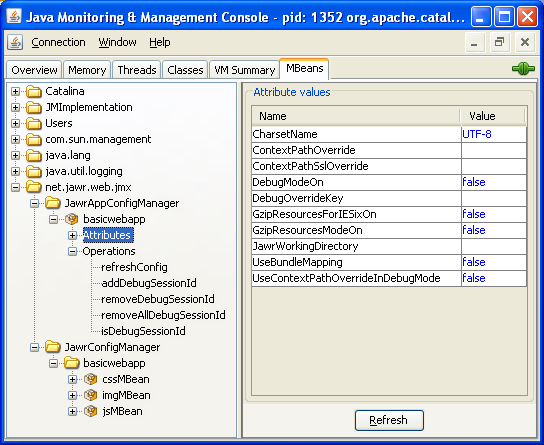

The Java Management Extensions (JMX) API is standard API introduced in J2SE 5.0 for managing and monitoring applications and services.
We have added the support to JMX in Jawr to allow user to modify the behaviour of Jawr at runtime.
For example, the user will be able to pass an entire application from production mode to debug mode and vice versa. The user will also be able to set one session in debug mode, while the rest of the application will still be in production mode.
This is a really powerfull way to interact with Jawr at runtime. To access to the Jawr MBeans, you will have to use a JMX console, like JConsole, which is provided in the JDK since Java 5.0 The Jawr MBeans are available accessible with the type net.jawr.web.jmx.
Important note : This feature will allow you to modify some Jawr properties at runtime, but you should keep in mind that your changes are not persisted. This means that if you made a modification at runtime, the next time you will restart your application, your latest modifications made at runtime, will not be taken into account.
You will find an overview of JMX at the following links :
The JMX is part of Java API since Java 5.
To enable it, you only have to pass the following argument in the virtual machine of your web application server:
-Dcom.sun.management.jmxremote
As JMX is not part of Java 1.4, you will have to import JMX jars in your application. The 2 jars required are JMX-RI and JMX-remote.
For those who are using maven, include the following dependencies in your pom.
<dependency>
<groupId>javax.management</groupId>
<artifactId>jmxri</artifactId>
<version>1.2.1</version>
</dependency>
<dependency>
<groupId>javax.management</groupId>
<artifactId>jmxremote</artifactId>
<version>1.0.1_04</version>
</dependency>
The JMX-RI and JMX-remote have not been deployed on maven, so when searching for dependencies, maven will only retrieve the pom files. You should download the Jars from Sun download center (http://www.sun.com/download/index.jsp). Please follow the next instructions, to retrieve those libraries :
For those, who are not using maven just download the jar files as described above, and put them in your application.
To secure the JMX access to your application, please look for the section "Using Password and Access Files" at the following link.
We have defined two types of MBeans in JAWR. One which handles the configuration for a resource type (JS, CSS, Image). And another one, which handles the configuration for an entire application.
This MBean will handle the configuration for one type of resource. You will be able to configure the following properties :
You could modify these values at runtime, but the values will only be taken in account when you will launch the refreshConfig operation from the JMX console :
/**
* Refresh the configuration.
*/
public void refreshConfig();
This MBean will handle the configuration for an entire application. This means that when modifying the configuration on this MBean, you will modify the configuration of JAWR for all resources (JS, CSS and Images).
You will be able to configure the following properties :
You could modify these values at runtime, but the values will only be taken in account when you will launch the refreshConfig operation from the JMX console :
/**
* Refresh the configuration.
*/
public void refreshConfig();
There are other methods available in the JawrApplicationConfigManagerMBean.
/**
* Add a session ID to the set of debug session ID.
* All request make by sessions, whose their IDs are contained in the debug session set,
* will be threated as in debug mode.
*
* @param sessionId the session ID to add
*/
public void addDebugSessionId(String sessionId);
/**
* Add a session ID, to the set of debug session ID.
* All request make by sessions, whose their IDs are contained in the debug session set,
* will be threated as in debug mode.
*
* @param sessionId the session ID to add
*/
public void removeDebugSessionId(String sessionId);
/**
* Remove a session ID from the set of debug session ID.
*
* @param sessionId the session ID to remove
*/
public void removeAllDebugSessionId();
/**
* Returns true if the session ID passed in parameter is a debuggable session ID
* @param sessionId the session ID
* @return true if the session ID passed in parameter is a debuggable session ID
*/
public boolean isDebugSessionId(String sessionId);
When you have multiple applications which are using Jawr, if you are using a servlet API, whose the version greater or equals to 2.5, Jawr will use the contextPath to identify the applications.
But if you are using a version which is lesser than 2.5, then you will have to use a context parameter named 'contextPath' in your web.xml to define the context path of the application like below.
<context-param>
<param-name>contextPath</param-name>
<param-value>myApplication</param-value>
</context-param>